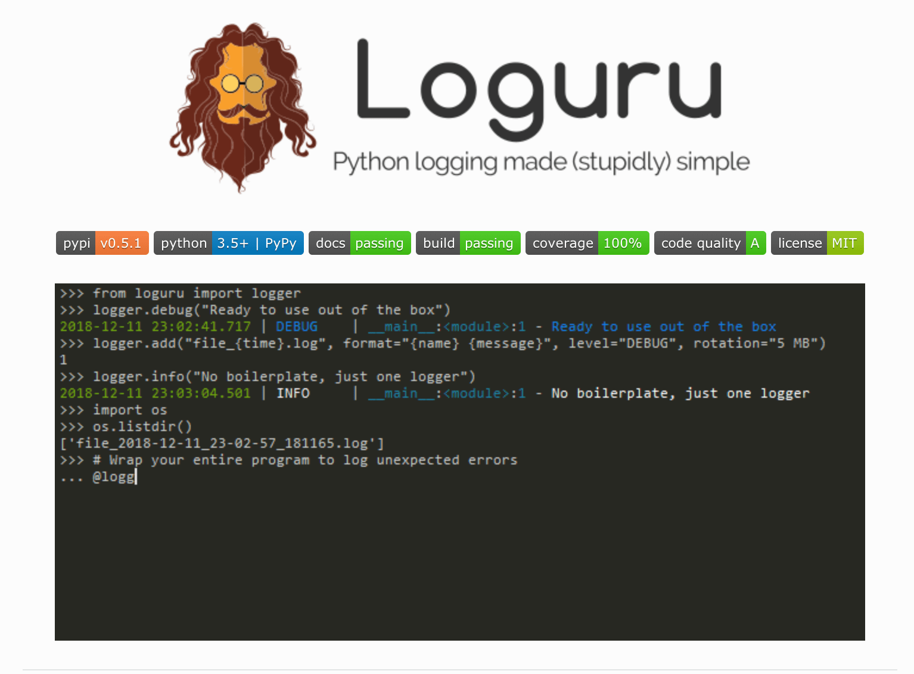

Loguru: 更优雅的日志记录解决方案！
loguru 是一个 Python 简易且强大的第三方日志记录库，该库旨在通过添加一系列有用的功能来解决标准记录器的注意事项，从而减少 Python 日志记录的痛苦。

1. 引入原因
简单且方便的帮助我们输出需要的日志信息！
使用
Python来写程序或者脚本的话，常常遇到的问题就是需要对日志进行删除。一方面可以帮助我们在程序出问题的时候排除问题，二来可以帮助我们记录需要关注的信息。但是，使用自带自带的
logging模块的话，则需要我们进行不同的初始化等相关工作。对应不熟悉该模块的同学来说，还是有些费劲的，比如需要配置Handler/Formatter等。
import logging
logger = logging.getLogger('xxx')
handler = logging.StreamHandler()
formatter = logging.Formatter('%(asctime)s %(name)-12s %(levelname)-8s %(message)s')
handler.setFormatter(formatter)
logger.addHandler(handler)
logger.setLevel(logging.DEBUG)
logger.debug('This is a %s', 'test')- 而
loguru就是一个可以 开箱即用 的日志记录模块，我们不再需要复杂的初始化操作就可以通过如下命令来记录日志信息了。
# pip
$ pip install loguru
2. 功能特性
有很多优点，以下列举了其中比较重要的几点！
- 开箱即用，无需准备
- 无需初始化，导入函数即可使用
- 更容易的文件日志记录与转存/保留/压缩方式
- 更优雅的字符串格式化输出
- 可以在线程或主线程中捕获异常
- 可以设置不同级别的日志记录样式
- 支持异步，且线程和多进程安全
- 支持惰性计算
- 适用于脚本和库
- 完全兼容标准日志记录
- 更好的日期时间处理
3. 快速上手
介绍 loguru 的常用操作和功能介绍！
- [1] 开箱即用，无需准备
loguru并没有什么黑科技，只是它预先帮助我们设置好了相关的配置，我们导入之后即可直接使用。
from loguru import logger
logger.debug("That's it, beautiful and simple logging!")- [2] 无需初始化，导入函数即可使用
- 如何添加处理程序(
handler)呢？ - 如何设置日志格式(
logs formatting)呢？ - 如何过滤消息(
filter messages)呢？ - 如何如何设置级别(
log level)呢？
- 如何添加处理程序(
# add
logger.add(sys.stderr, \
format="{time} {level} {message}",\
filter="my_module",\
level="INFO")- [3] 更容易的文件日志记录与转存/保留/压缩方式
# 日志文件记录
logger.add("file_{time}.log")
# 日志文件转存
logger.add("file_{time}.log", rotation="500 MB")
logger.add("file_{time}.log", rotation="12:00")
logger.add("file_{time}.log", rotation="1 week")
# 多次时间之后清理
logger.add("file_X.log", retention="10 days")
# 使用zip文件格式保存
logger.add("file_Y.log", compression="zip")- [4] 更优雅的字符串格式化输出
logger.info(
"If you're using Python {}, prefer {feature} of course!",
3.6, feature="f-strings")- [5] 在线程或主线程中捕获异常
@logger.catch
def my_function(x, y, z):
# An error? It's caught anyway!
return 1 / (x + y + z)
my_function(0, 0, 0)- [6] 可以设置不同级别的日志记录样式
Loguru会自动为不同的日志级别，添加不同的颜色进行区分，当然我们也是可以自定义自己喜欢的显示颜色样式的。
logger.add(sys.stdout,
colorize=True,
format="<green>{time}</green> <level>{message}</level>")
logger.add('logs/z_{time}.log',
level='DEBUG',
format='{time:YYYY-MM-DD :mm:ss} - {level} - {file} - {line} - {message}',
rotation="10 MB")- [7] 支持异步且线程和多进程安全
- 默认情况下，添加到
logger中的日志信息都是线程安全的。但这并不是多进程安全的，我们可以通过添加enqueue参数来确保日志完整性。 - 如果我们想要在异步任务中使用日志记录的话，也是可以使用同样的参数来保证的。并且通过
complete()来等待执行完成。
- 默认情况下，添加到
# 异步写入
logger.add("some_file.log", enqueue=True)- [7] 异常的完整性描述
- 用于记录代码中发生的异常的
bug跟踪，Loguru通过允许显示整个堆栈跟踪(包括变量值)来帮助您识别问题。
- 用于记录代码中发生的异常的
logger.add("out.log", backtrace=True, diagnose=True)
def func(a, b):
return a / b
def nested(c):
try:
func(5, c)
except ZeroDivisionError:
logger.exception("What?!")
nested(0)- [8] 结构化日志记录
- 对日志进行序列化以便更容易地解析或传递数据结构，使用序列化参数，在将每个日志消息发送到配置的接收器之前，将其转换为
JSON字符串。 - 同时，使用
bind()方法，可以通过修改额外的record属性来将日志记录器消息置于上下文中。还可以通过组合bind()和filter对日志进行更细粒度的控制。 - 最后
patch()方法允许将动态值附加到每个新消息的记录dict上。
- 对日志进行序列化以便更容易地解析或传递数据结构，使用序列化参数，在将每个日志消息发送到配置的接收器之前，将其转换为
# 序列化为json格式
logger.add(custom_sink_function, serialize=True)
# bind方法的用处
logger.add("file.log", format="{extra[ip]} {extra[user]} {message}")
context_logger = logger.bind(ip="192.168.0.1", user="someone")
context_logger.info("Contextualize your logger easily")
context_logger.bind(user="someone_else").info("Inline binding of extra attribute")
context_logger.info("Use kwargs to add context during formatting: {user}", user="anybody")
# 粒度控制
logger.add("special.log", filter=lambda record: "special" in record["extra"])
logger.debug("This message is not logged to the file")
logger.bind(special=True).info("This message, though, is logged to the file!")
# patch()方法的用处
logger.add(sys.stderr, format="{extra[utc]} {message}")
logger = logger.patch(lambda record: record["extra"].update(utc=datetime.utcnow()))- [9] 惰性计算
- 有时希望在生产环境中记录详细信息而不会影响性能，可以使用
opt()方法来实现这一点。
- 有时希望在生产环境中记录详细信息而不会影响性能，可以使用
logger.opt(lazy=True).debug("If sink level <= DEBUG: {x}", x=lambda: expensive_function(2**64))
# By the way, "opt()" serves many usages
logger.opt(exception=True).info("Error stacktrace added to the log message (tuple accepted too)")
logger.opt(colors=True).info("Per message <blue>colors</blue>")
logger.opt(record=True).info("Display values from the record (eg. {record[thread]})")
logger.opt(raw=True).info("Bypass sink formatting\n")
logger.opt(depth=1).info("Use parent stack context (useful within wrapped functions)")
logger.opt(capture=False).info("Keyword arguments not added to {dest} dict", dest="extra")- [10] 可定制的级别
new_level = logger.level("SNAKY", no=38, color="<yellow>", icon="🐍")
logger.log("SNAKY", "Here we go!")- [11] 适用于脚本和库
# For scripts
config = {
"handlers": [
{"sink": sys.stdout, "format": "{time} - {message}"},
{"sink": "file.log", "serialize": True},
],
"extra": {"user": "someone"}
}
logger.configure(**config)
# For libraries
logger.disable("my_library")
logger.info("No matter added sinks, this message is not displayed")
logger.enable("my_library")
logger.info("This message however is propagated to the sinks")- [12] 完全兼容标准日志记录
- 希望使用
Loguru作为内置的日志处理程序？ - 需要将
Loguru消息到标准日志？ - 想要拦截标准的日志消息到
Loguru中汇总？
- 希望使用
handler = logging.handlers.SysLogHandler(address=('localhost', 514))
logger.add(handler)class PropagateHandler(logging.Handler):
def emit(self, record):
logging.getLogger(record.name).handle(record)
logger.add(PropagateHandler(), format="{message}")class InterceptHandler(logging.Handler):
def emit(self, record):
# Get corresponding Loguru level if it exists
try:
level = logger.level(record.levelname).name
except ValueError:
level = record.levelno
# Find caller from where originated the logged message
frame, depth = logging.currentframe(), 2
while frame.f_code.co_filename == logging.__file__:
frame = frame.f_back
depth += 1
logger.opt(depth=depth, exception=record.exc_info).log(level, record.getMessage())
logging.basicConfig(handlers=[InterceptHandler()], level=0)- [13] 方便的解析器
- 从生成的日志中提取特定的信息通常很有用，这就是为什么
Loguru提供了一个parse()方法来帮助处理日志和正则表达式。
- 从生成的日志中提取特定的信息通常很有用，这就是为什么
pattern = r"(?P<time>.*) - (?P<level>[0-9]+) - (?P<message>.*)" # Regex with named groups
caster_dict = dict(time=dateutil.parser.parse, level=int) # Transform matching groups
for groups in logger.parse("file.log", pattern, cast=caster_dict):
print("Parsed:", groups)
# {"level": 30, "message": "Log example", "time": datetime(2018, 12, 09, 11, 23, 55)}- [14] 通知机制
import notifiers
params = {
"username": "you@gmail.com",
"password": "abc123",
"to": "dest@gmail.com"
}
# Send a single notification
notifier = notifiers.get_notifier("gmail")
notifier.notify(message="The application is running!", **params)
# Be alerted on each error message
from notifiers.logging import NotificationHandler
handler = NotificationHandler("gmail", defaults=params)
logger.add(handler, level="ERROR")- [15] Flask 框架集成
- 现在最关键的一个问题是如何兼容别的
logger，比如说tornado或者django有一些默认的logger。 - 经过研究，最好的解决方案是参考官方文档的，完全整合
logging的工作方式。比如下面将所有的logging都用loguru的logger再发送一遍消息。
- 现在最关键的一个问题是如何兼容别的
import logging
import sys
from pathlib import Path
from flask import Flask
from loguru import logger
app = Flask(__name__)
class InterceptHandler(logging.Handler):
def emit(self, record):
logger_opt = logger.opt(depth=6, exception=record.exc_info)
logger_opt.log(record.levelname, record.getMessage())
def configure_logging(flask_app: Flask):
"""配置日志"""
path = Path(flask_app.config['LOG_PATH'])
if not path.exists():
path.mkdir(parents=True)
log_name = Path(path, 'sips.log')
logging.basicConfig(handlers=[InterceptHandler(level='INFO')], level='INFO')
# 配置日志到标准输出流
logger.configure(handlers=[{"sink": sys.stderr, "level": 'INFO'}])
# 配置日志到输出到文件
logger.add(log_name, rotation="500 MB", encoding='utf-8', colorize=False, level='INFO')4. 要点解析
介绍，主要函数的使用方法和细节 - add()的创建和删除
- add() - 非常重要的参数
sink参数- 可以传入一个
file对象- 例如
sys.stderr或者open('file.log', 'w')都可以
- 例如
- 可以直接传入一个
str字符串或者pathlib.Path对象- 代表文件路径，会自动创建对应路径的日志文件并将日志输出进去
- 可以是一个方法
- 可以自行定义输出实现
- 可以是一个
logging模块的Handler- 可以实现自定义
Handler的配置，比如FileHandler、StreamHandler等等
- 可以实现自定义
- 可以是一个自定义的类
- 具体的实现规范可以参见官方文档
- 可以传入一个
def add(self, sink, *,
level=_defaults.LOGURU_LEVEL, format=_defaults.LOGURU_FORMAT,
filter=_defaults.LOGURU_FILTER, colorize=_defaults.LOGURU_COLORIZE,
serialize=_defaults.LOGURU_SERIALIZE, backtrace=_defaults.LOGURU_BACKTRACE,
diagnose=_defaults.LOGURU_DIAGNOSE, enqueue=_defaults.LOGURU_ENQUEUE,
catch=_defaults.LOGURU_CATCH, **kwargs
):- 另外添加
sink之后我们也可以对其进行删除，相当于重新刷新并写入新的内容。删除的时候根据刚刚add方法返回的id进行删除即可。可以发现，在调用remove方法之后，确实将历史log删除了。但实际上这并不是删除，只不过是将sink对象移除之后，在这之前的内容不会再输出到日志中，这样我们就可以实现日志的刷新重新写入操作
from loguru import logger
trace = logger.add('runtime.log')
logger.debug('this is a debug message')
logger.remove(trace)
logger.debug('this is another debug message')
5. 参考链接
送人玫瑰，手有余香！